Candidate List 20260822Last night — ZTF: 2,244 passed basic cuts (137 young) · LSST: 0 passed basic cuts (0 young)Previous Day Next Day
Section 1: New Sources (age<1d) Section 2: Old (1-5d) sources observed last nightplaceholder
Section 1: New Afterglow/FBOT Cands Last Night (2)
1. [ZTF] ZTF26abpyrfi (FBOT?) [Back to Top] [Share] [Trigger Swift] [Fritz Alert] [Fritz Source] [Lasair]RA, Dec: 262.39076, 15.40504 17h29m33.78s, 15d24m18.15sGalactic (l, b): 38.16291, 24.90857 ext(g-r) = 0.097


TESS: Sectors [ 25 26 52 53 79 118]
PS1: 0 sources in 3 arcsec
LegacySurvey: 1 sources in 3 arcsec Closest: d = 1.31 arcsec, 180.9 deg (east of north) photoz=0.09 (68% bounds 0.08, 0.11), type=SER peak abs mag (ext. corrected) = -19.78 (68% bounds -19.37, -20.2)

Extinction-corrected gr color:
From alerts: -0.37 +/- 0.15 mag
Rise Rate:
g: 0.5 mag/day
r: 0.46 mag/day
Fade Rate:
2. [ZTF] ZTF26abqawtm (Afterglow?) [Back to Top] [Share] [Trigger Swift] [Fritz Alert] [Fritz Source] [Lasair]RA, Dec: 298.08094, 9.06845 19h52m19.43s, 9d 4m6.43sGalactic (l, b): 48.11018, -9.1417 ext(g-r) = 0.195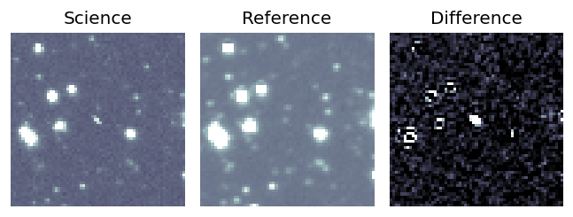
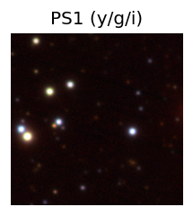

TESS: Sectors [54 81]
PS1: 1 source in 3 arcsec Closest: d = 0.59 arcsec photoz=1.40+/-0.28 peak abs mag = -27.13
LegacySurvey: 0 sources in 3 arcsec
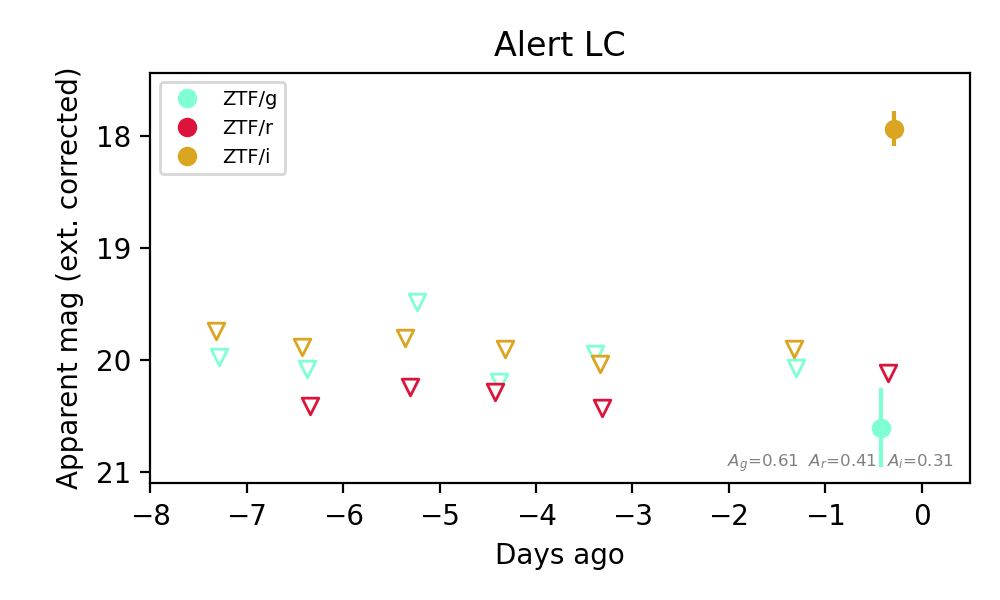
Extinction-corrected gr color:
From alerts: 0.49 +/- 99 mag
Extinction-corrected gi color:
From alerts: 2.67 +/- 0.38 mag
Extinction-corrected ri color:
From alerts: 2.18 +/- 99 mag
Consistent with synchrotron, g-r>0!
Rise Rate:
i: 1.91 mag/day
Fade Rate:
Section 2: Older Sources Observed Last Night (8)
0. [ZTF] ZTF26abowfvb (Afterglow?) [Back to Top] [Share] [Trigger Swift] [Fritz Alert] [Fritz Source] [Lasair]RA, Dec: 307.93956, -19.11672 20h31m45.49s, -19d-7m-0.18sGalactic (l, b): 25.68375, -30.38313 WARNING: -0.23 deg from ecliptic plane ext(g-r) = 0.072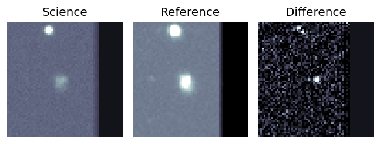
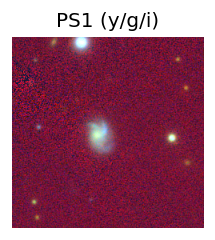
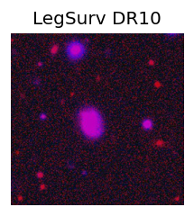
TESS: Sectors [ 92 116]
NED photo-z only: WISEA J203145.73-190700.9 (G, 3.5″) z=0.0804 [zflag PUN] — not used for peak abs mag
PS1: 0 sources in 3 arcsec
LegacySurvey: 0 sources in 3 arcsec
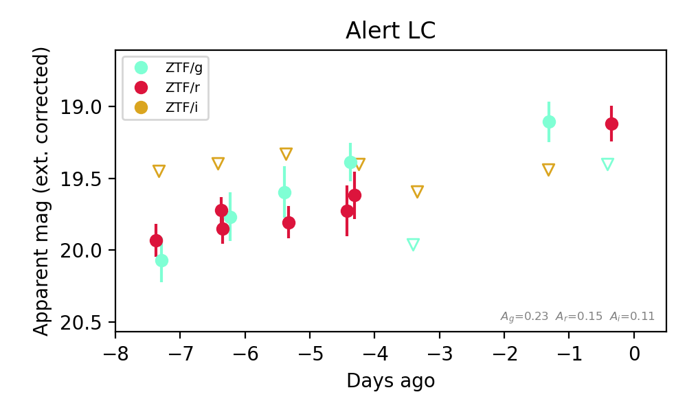
Extinction-corrected gr color:
From alerts: 0.28 +/- 99 mag
Extinction-corrected gi color:
From alerts: -0.33 +/- 99 mag
Extinction-corrected ri color:
From alerts: 0.27 +/- 99 mag
Rise Rate:
g: 0.41 mag/day
r: 0.11 mag/day
Fade Rate:
g: 0.59 mag/day
1. [ZTF] ZTF26abpanks (FBOT?) [Back to Top] [Share] [Trigger Swift] [Fritz Alert] [Fritz Source] [Lasair]RA, Dec: 352.79839, -10.17866 23h31m11.61s, -10d-10m-43.17sGalactic (l, b): 70.98667, -64.61046 ext(g-r) = 0.026


TESS: Sectors [ 2 29 42 92]
SDSS (<15 kpc):Found SDSS phot-z: z=0.89; peak abs mag = -25.53
PS1: 0 sources in 3 arcsec
LegacySurvey: 1 sources in 3 arcsec Closest: d = 0.35 arcsec, 71.3 deg (east of north) photoz=0.8 (68% bounds 0.14, 1.63), type=REX peak abs mag (ext. corrected) = -25.26 (68% bounds -20.83, -27.15)

Extinction-corrected gr color:
From alerts: -0.3 +/- 0.11 mag
Extinction-corrected gi color:
From alerts: -0.53 +/- 0.16 mag
Extinction-corrected ri color:
From alerts: -0.29 +/- 0.12 mag
Rise Rate:
g: 0.34 mag/day
r: 0.26 mag/day
i: 0.21 mag/day
Fade Rate:
2. [ZTF] ZTF26abpdzhv (Afterglow?) [Back to Top] [Share] [Trigger Swift] [Fritz Alert] [Fritz Source] [Lasair]RA, Dec: 320.00119, -20.34617 21h20m0.29s, -20d-20m-46.22sGalactic (l, b): 29.00542, -41.4816 WARNING: -4.55 deg from ecliptic plane ext(g-r) = 0.046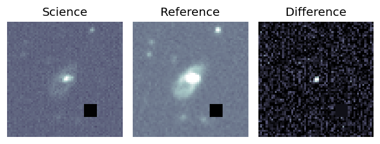
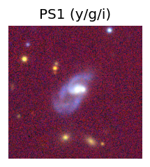
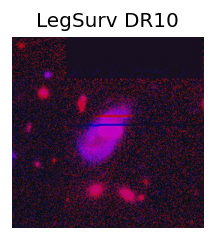
TESS: Sectors [ 92 116]
NED host (10 arcsec):Found WISEA J212000.22-202045.4 (G, 1.1″); NED spec-z: z=0.1143 [zflag SUN]; peak abs mag = -19.47
PS1: 0 sources in 3 arcsec
LegacySurvey: 0 sources in 3 arcsec
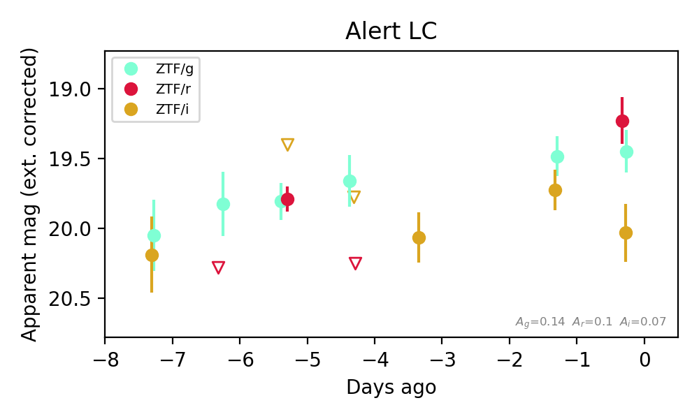
Extinction-corrected gr color:
From alerts: 0.22 +/- 0.23 mag
Extinction-corrected gi color:
From alerts: -0.58 +/- 0.26 mag
Extinction-corrected ri color:
From alerts: -0.8 +/- 0.27 mag
Consistent with synchrotron, g-r>0!
Rise Rate:
g: 0.07 mag/day
r: 0.48 mag/day
Fade Rate:
r: 0.45 mag/day
3. [ZTF] ZTF26abpgdyr (FBOT?) [Back to Top] [Share] [Trigger Swift] [Fritz Alert] [Fritz Source] [Lasair]RA, Dec: 308.87619, 51.59002 20h35m30.29s, 51d35m24.06sGalactic (l, b): 88.73487, 6.59014 ext(g-r) = 0.665


TESS: Sectors [ 15 16 41 55 56 75 76 82 83 120 121]
PS1: 1 source in 3 arcsec Closest: d = 7.62 arcsec photoz=0.09+/-0.01 peak abs mag = -20.30
LegacySurvey: 0 sources in 3 arcsec

Extinction-corrected gr color:
From alerts: 0.58 +/- 0.23 mag
Consistent with synchrotron, g-r>0!
Rise Rate:
g: 0.32 mag/day
r: 0.3 mag/day
Fade Rate:
4. [ZTF] ZTF26abpnwae (Afterglow?) [Back to Top] [Share] [Trigger Swift] [Fritz Alert] [Fritz Source] [Lasair]RA, Dec: 302.17453, 11.23213 20h 8m41.89s, 11d13m55.68sGalactic (l, b): 52.07383, -11.53214 ext(g-r) = 0.165


TESS: Sectors [54 81]
PS1: 1 source in 3 arcsec Closest: d = 4.55 arcsec photoz=0.39+/-0.06 peak abs mag = -24.09
LegacySurvey: 0 sources in 3 arcsec

Extinction-corrected gr color:
From alerts: -0.35 +/- 0.36 mag
Extinction-corrected gi color:
From alerts: -0.3 +/- 0.17 mag
Extinction-corrected ri color:
From alerts: 0.79 +/- 0.26 mag
Consistent with synchrotron, g-r>0!
Rise Rate:
g: 1.17 mag/day
i: 0.91 mag/day
Fade Rate:
g: 0.17 mag/day
5. [ZTF] ZTF26abpvgpm (FBOT?) [Back to Top] [Share] [Trigger Swift] [Fritz Alert] [Fritz Source] [Lasair]RA, Dec: 347.26898, 23.55085 23h 9m4.55s, 23d33m3.04sGalactic (l, b): 94.54158, -33.61647 ext(g-r) = 0.191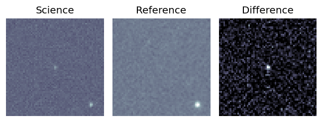
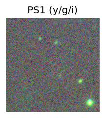
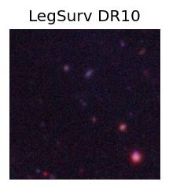
TESS: Sectors [56 83]
PS1: 0 sources in 3 arcsec
LegacySurvey: 1 sources in 3 arcsec Closest: d = 0.45 arcsec, 64.9 deg (east of north) photoz=0.44 (68% bounds 0.31, 0.62), type=EXP peak abs mag (ext. corrected) = -22.21 (68% bounds -21.34, -23.11)
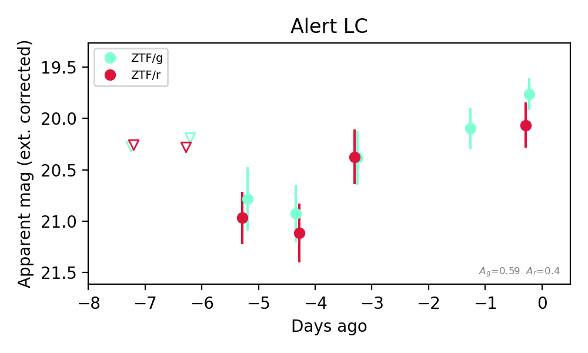
Extinction-corrected gr color:
From alerts: -0.3 +/- 0.27 mag
Rise Rate:
g: 0.23 mag/day
r: 0.2 mag/day
Fade Rate:
6. [ZTF] ZTF26abpwzbm (Afterglow?) [Back to Top] [Share] [Trigger Swift] [Fritz Alert] [Fritz Source] [Lasair]RA, Dec: 6.33488, 16.64354 0h25m20.37s, 16d38m36.76sGalactic (l, b): 113.95229, -45.77267 ext(g-r) = 0.077


TESS: Sectors [57 84]
SDSS (<15 kpc):Found SDSS phot-z: z=0.08; peak abs mag = -17.90
PS1: 0 sources in 3 arcsec
LegacySurvey: 1 sources in 3 arcsec Closest: d = 1.95 arcsec, 72.3 deg (east of north) photoz=0.13 (68% bounds 0.12, 0.16), type=REX peak abs mag (ext. corrected) = -19.07 (68% bounds -18.87, -19.41)

Extinction-corrected gr color:
From alerts: -0.05 +/- 0.3 mag
Extinction-corrected gi color:
From alerts: 0.0 +/- 0.27 mag
Extinction-corrected ri color:
From alerts: -0.35 +/- 0.32 mag
Consistent with synchrotron, g-r>0!
Rise Rate:
g: 0.34 mag/day
r: 0.26 mag/day
i: 0.64 mag/day
Fade Rate:
7. [ZTF] ZTF26abqcgsz (FBOT?) [Back to Top] [Share] [Trigger Swift] [Fritz Alert] [Fritz Source] [Lasair]RA, Dec: 12.68086, 3.74642 0h50m43.41s, 3d44m47.10sGalactic (l, b): 122.5846, -59.12485 WARNING: -1.56 deg from ecliptic plane ext(g-r) = 0.021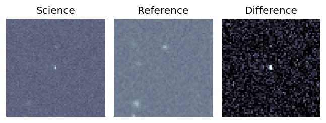
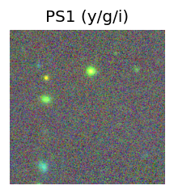
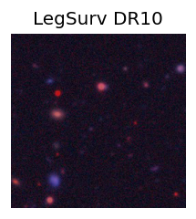
TESS: Sectors [42 43 70]
PS1: 0 sources in 3 arcsec
LegacySurvey: 1 sources in 3 arcsec Closest: d = 1.17 arcsec, 299.0 deg (east of north) photoz=0.69 (68% bounds 0.48, 1.37), type=REX peak abs mag (ext. corrected) = -23.16 (68% bounds -22.23, -24.99)
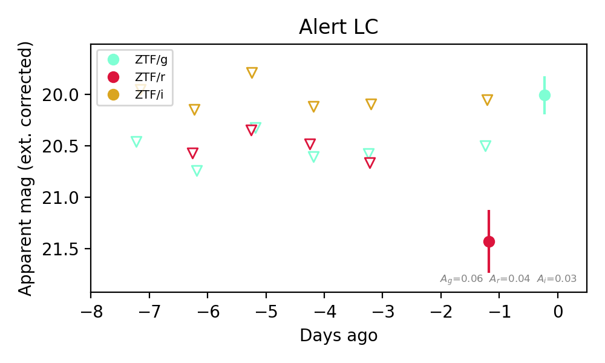
Extinction-corrected gr color:
From alerts: -0.93 +/- 99 mag
Extinction-corrected ri color:
From alerts: 1.38 +/- 99 mag
Rise Rate:
g: 0.48 mag/day
Fade Rate: